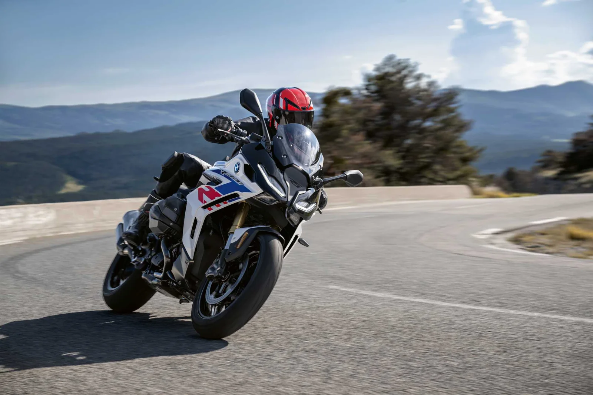
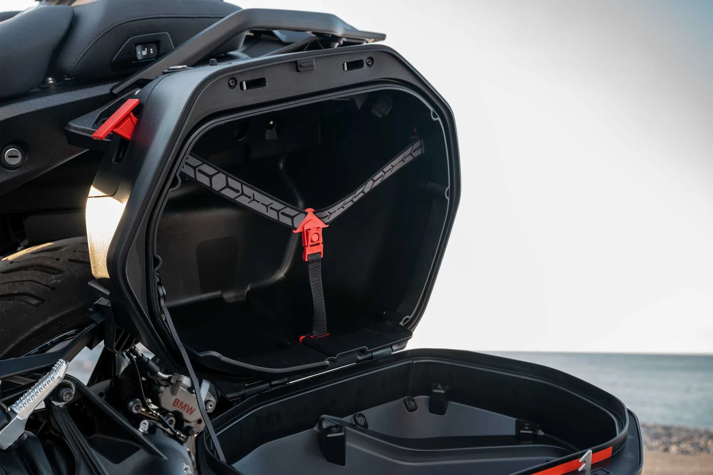
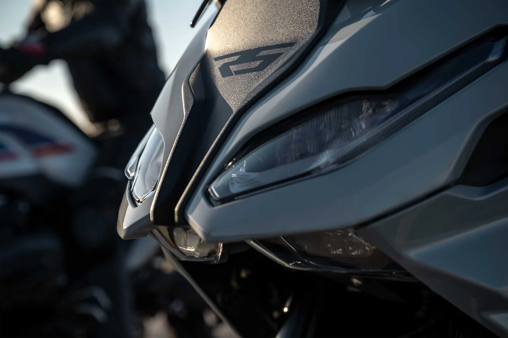

▲ BMW R 1300 RS. 1,300cc 박서 엔진으로 145마력을 낸다 ⓒ BMW Motorrad
스포츠 투어러는 이름부터 절충안입니다. 스포츠바이크의 재미와 투어러의 편안함을 한 대에 담겠다는 것인데, 둘은 서로를 깎아먹는 성질입니다.
BMW R 1300 RS로 1박 2일 800km를 달린 시승에서 가장 많이 언급된 것은 출력이 아니었습니다. 변속이었습니다.
1. ASA가 바꾼 것
ASA(Automated Shift Assistant)는 클러치 조작을 자동화한 장치입니다. 클러치 레버 자체가 없고, 6단 기어박스에 전기기계식 액추에이터 두 개를 물려 클러치 단속과 변속을 처리합니다. 자동인 D 모드와 라이더가 단수를 고르는 M 모드를 모두 씁니다.
시승에서 언급된 대목은 명확합니다. "도시 정체나 긴 국도에서 계속 변속할 필요 없어 피로가 줄었다"는 것입니다.
📍 모터사이클에서 변속 피로가 큰 이유
자동차는 왼발로 클러치를 밟고 오른손으로 기어를 넣습니다. 모터사이클은 왼손으로 클러치를 잡고 왼발로 기어를 올리고 내립니다.
정체 구간에서는 이 동작이 수십 초마다 반복됩니다. 장거리에서는 손가락과 손목의 누적 피로가 상당합니다. 클러치 조작을 없애면 그 부담이 통째로 사라집니다. 성능이 아니라 지구력에 관한 장치인 셈입니다.
2. 145마력과 149Nm
| 항목 | 수치 |
|---|---|
| 형식 | 1,300cc 박서 2기통 |
| 보어 × 스트로크 | 106.5 × 73mm |
| 최고출력 | 145마력(107kW) / 7,750rpm |
| 최대토크 | 149Nm / 6,500rpm |
보어가 스트로크보다 훨씬 큽니다. 106.5mm 대 73mm로, 전형적인 숏스트로크 구성입니다. 고회전에서 출력을 뽑기 유리한 설계입니다.
📍 박서 엔진이 투어러에 자주 쓰이는 이유
박서는 실린더가 좌우로 누워 마주 보는 구조입니다. 엔진 무게중심이 낮게 깔려 차체가 안정됩니다.
또 실린더가 밖으로 나와 있어 공랭 효율이 좋고, 좌우 진동이 서로 상쇄돼 장거리 진동 피로가 적습니다. BMW가 100년 가까이 이 형식을 유지해온 배경입니다.

▲ 다이나믹 프로 모드에서는 산길 와인딩을 즐길 수 있는 경쾌한 움직임을 보였다 ⓒ BMW Motorrad
3. 800km에 네 가지 노면
코스 구성이 시승의 성격을 말해줍니다. 서울에서 전남 화순까지 내려갔다 올라오는 1박 2일 일정에 고속도로·국도·산길 와인딩·빗길이 모두 들어갔습니다.
| 구간 | 보는 것 |
|---|---|
| 고속도로 | 방풍 성능 · 장거리 자세 |
| 국도 | 정체 구간 변속 피로 |
| 산길 와인딩 | 차체 움직임 · 주행 모드 |
| 빗길 | 접지력 · 전자장비 개입 |
스포츠 투어러를 평가하기에는 적합한 구성입니다. 한쪽에 치우친 코스에서는 이 장르의 절충점이 드러나지 않습니다.
4. 빗길에서의 평가
시승에서 빗길 주행 안정성이 별도로 언급됐습니다.
모터사이클은 접지면이 손바닥 크기 두 개뿐입니다. 젖은 노면에서 그 면적이 주는 여유는 자동차와 비교가 되지 않습니다. 그래서 최근 대형 모터사이클에는 주행 모드와 트랙션 컨트롤이 필수처럼 들어갑니다.

▲ R 1300 RS는 스포츠바이크의 재미와 투어러의 편안함을 함께 노린 구성이다 ⓒ BMW Motorrad
5. 다이나믹 프로 모드
산길 와인딩에서는 다이나믹 프로 모드가 언급됐습니다. 시승 평가는 "경쾌한 차체 움직임"이었습니다.
주행 모드는 스로틀 반응, 트랙션 컨트롤 개입 시점, 서스펜션 감쇠, 엔진 브레이크 강도를 한 번에 바꿉니다. 프로 계열 모드는 개입을 늦추고 라이더에게 더 넘기는 설정입니다.
📍 자동 변속과 스포츠 주행은 상충하지 않나
흔한 우려입니다. 다만 ASA는 D 모드(자동)와 M 모드(수동)를 모두 지원합니다. 와인딩에서는 M 모드로 원하는 단수를 직접 고르고, 정체 구간에서는 D 모드로 넘길 수 있습니다.
클러치 레버가 없어졌을 뿐 변속 자체의 주도권은 남아 있습니다. 자동차의 듀얼 클러치 변속기와 성격이 비슷합니다.
6. 누구에게 맞나
| 조건 | 적합도 |
|---|---|
| 장거리 투어링 중심 | 적합 — 편한 자세와 방풍 |
| 도심 출퇴근 비중이 큼 | ASA 옵션이 결정적 |
| 와인딩 위주 | 다이나믹 프로 모드로 대응 가능 |
| 서킷 중심 | 부적합 — 순수 스포츠바이크 영역 |
결론은 절충이 성립했다는 쪽입니다. 스포츠바이크의 재미와 투어러의 편안함을 겸비한 스포츠 투어러로 평가됐고, 그 균형을 만든 결정적 장치가 ASA였습니다.

▲ 장거리에서 변속 피로가 줄면 남는 체력이 곧 주행 여유가 된다 ⓒ BMW Motorrad
7. 정리
BMW R 1300 RS로 서울에서 전남 화순을 왕복하는 1박 2일 약 800km 시승이 진행됐습니다. 고속도로·국도·산길 와인딩·빗길이 모두 포함된 코스였습니다.
1,300cc 박서 엔진은 보어 스트로크 106.5 × 73mm의 숏스트로크 구성으로 145마력/7,750rpm, 149Nm/6,500rpm을 냅니다.
가장 크게 평가된 것은 출력이 아니라 ASA(자동 변속 어시스턴트)였습니다. 클러치 조작이 사라지면서 도심 정체와 긴 국도에서 피로가 줄었다는 평가입니다. 다이나믹 프로 모드에서는 와인딩을 즐길 수 있는 경쾌한 움직임을 보였고, 빗길 안정성도 양호했습니다.